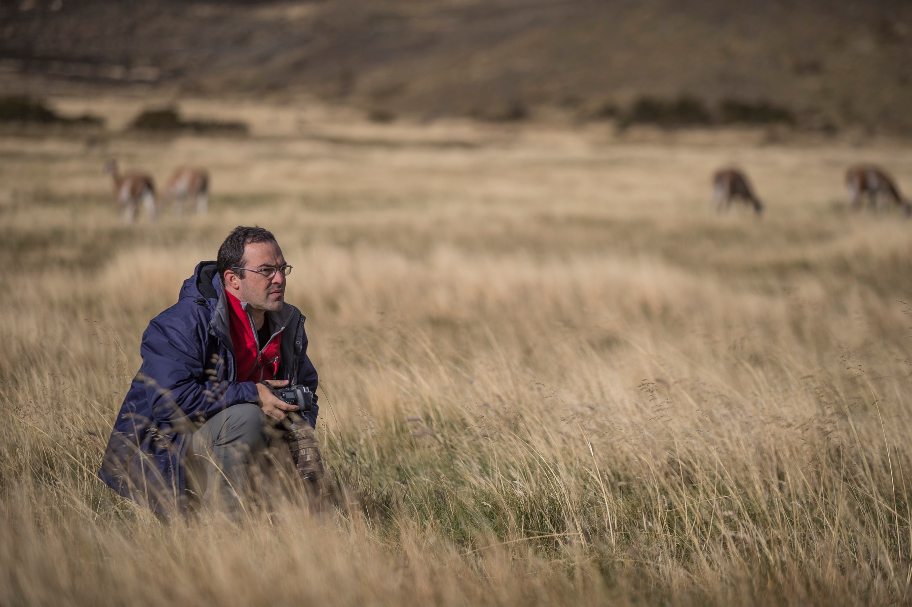

Paulo Behar
uma história de paixão
Engenheiro de formação, Paulo Behar construiu carreira como executivo de Tecnologia da Informação. A fotografia caminhou em paralelo durante todo esse tempo, desde a adolescência.
A vida empresarial não afastou o sonho de ser fotógrafo. Ao contrário: deu sustentação e segurança para que, anos depois, o projeto de mudança e de retorno às origens voltasse com convicção, planejamento e uma enorme motivação para registrar as belezas que só a fotografia consegue capturar.
A carreira fotográfica profissional começou em 2017, com cursos e expedições de campo, em especial ao lado de Araquém Alcântara, ícone da fotografia de natureza no Brasil.
Seu trabalho foi publicado nas edições online da National Geographic Brasil e da BBC Brasil, e esteve entre as 15 fotos mais curtidas do Your Shot, da National Geographic Brasil. Recebeu Menção Honrosa no Brasília Photo Show e no Toronto International Salon, e a medalha de bronze do International Exhibition Photo Story de Kumanovo, pela coleção de vida selvagem.
Expôs no Museu Afro Brasil, no Parque Ibirapuera, na Parallax Art Fair, em Londres, na Câmara Municipal de Arujá e no Auckland Festival of Photography, na Nova Zelândia.
Hoje conduz o projeto Felinos do Brasil, um registro dos felinos que habitam os biomas brasileiros, que se tornou livro.
“Paulo Behar pretende registrar as belezas da natureza e da vida selvagem, com um olhar que busca impactar e emocionar o espectador.”Silvio Pinhatti, curador da exposição Olhares Revelados